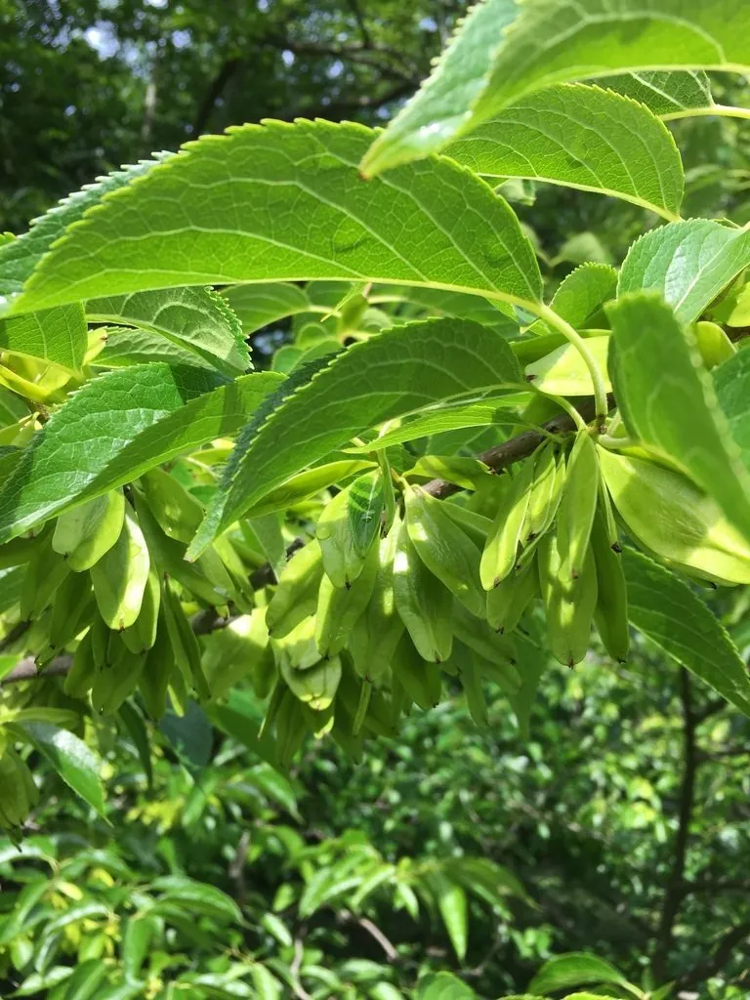

乔木 · 植物界
杜仲 Eucommia ulmoides

杜仲科杜仲属落叶乔木，中国特有单型科植物，树皮折断可见银白色胶丝，是著名的药用与胶源树种。
- 分类
- 门被子植物门纲木兰纲目丝缨花目科杜仲科属杜仲属
- 栖息环境
- 海拔 300–2500 米的山地林中，喜温暖湿润、阳光充足
- 地理分布
- 中国陕西、甘肃、四川、贵州、湖北、湖南、河南等地，为中国特有
- 保护级别
- 国家二级重点保护野生植物；IUCN 暂无评估
物种志
杜仲为杜仲科杜仲属落叶乔木，高可达二十米，树皮灰褐色，折断后可见细密的银白色胶丝。叶片互生，椭圆状卵形，边缘有锯齿，表面深绿，背面淡绿，揉碎叶片也能拉出白丝。花单性，雌雄异株，无花被，先叶开放或与叶同放，花期三至四月；翅果扁平，长椭圆形，成熟时褐色，果期九至十月。
杜仲是中国特有的单型科植物，分布于陕西、甘肃、四川、贵州、湖北、湖南、河南等地，多生于海拔三百至两千五百米的山地林中。它喜温暖湿润和充足阳光，适宜深厚肥沃、排水良好的砂质壤土。树皮是传统中药材，能补肝肾、强筋骨；树皮、叶和果含杜仲胶，是重要的天然橡胶资源；木材坚韧，可制家具。野生杜仲资源稀少，被列为国家二级重点保护野生植物。
形态与习性
- 株高可达 20 m，树皮含胶丝
- 花期3–4 月，花单性、无花被
- 果期9–10 月，翅果扁平
- 光照喜光，幼树稍耐阴
- 水分喜湿润，忌积水
- 土壤深厚肥沃的砂质壤土
- 主要用途树皮入药，提取杜仲胶
趣味知识
- 杜仲树皮折断后会拉出银白色的胶丝，因此又称丝绵树。
- 杜仲是单型科植物，整个杜仲科只有杜仲一种，为中国特有。
- 杜仲胶兼具橡胶与塑料的性质，可用于制作医用材料和高铁部件。